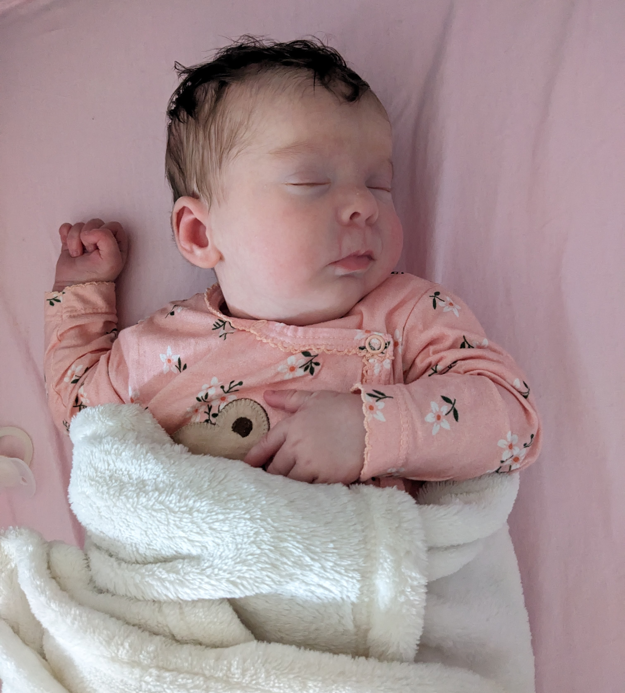
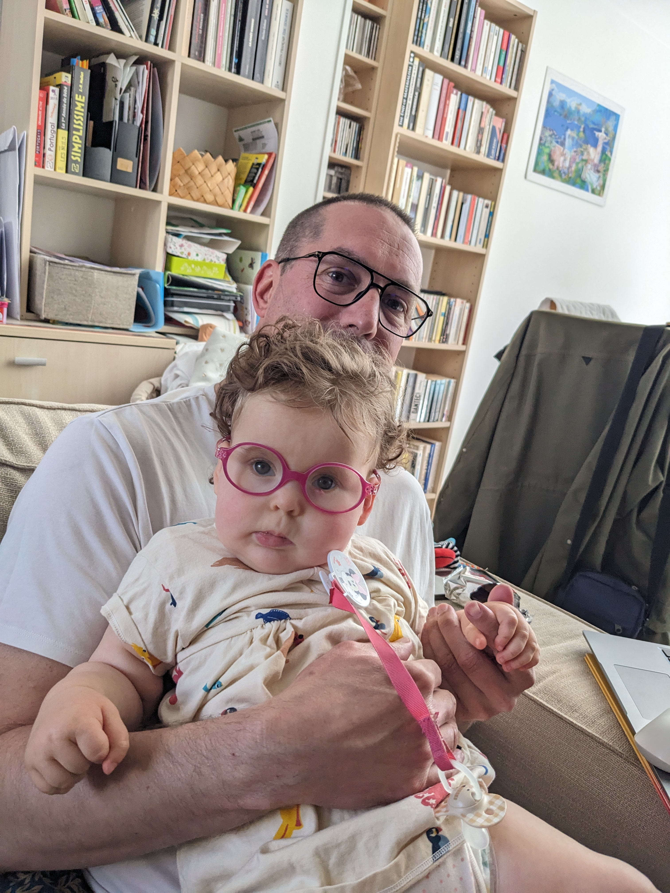
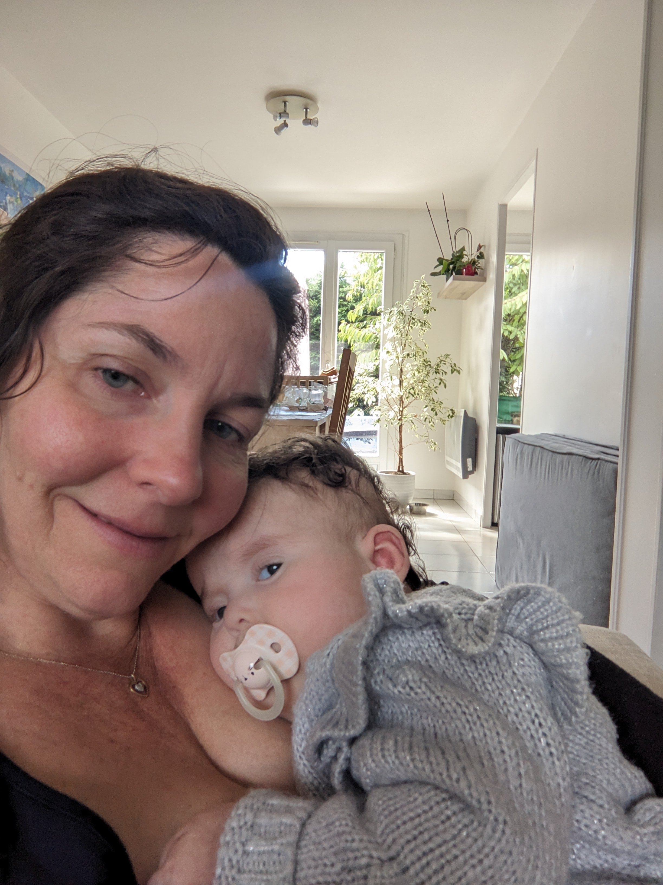
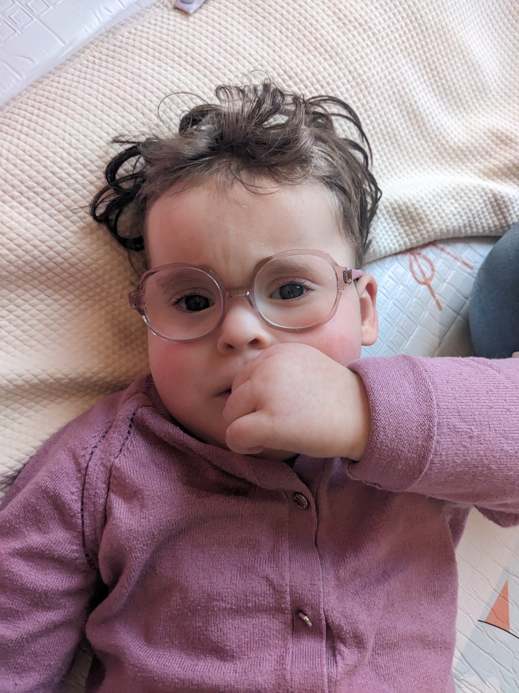
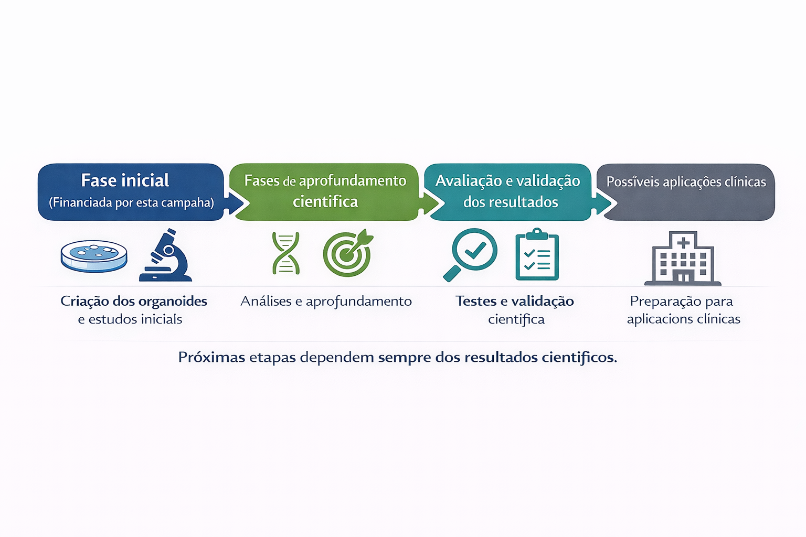

Uma campanha real. Uma corrida contra o tempo.
Juntos pela Giulia
E por todas as crianças com a síndrome de Pallister-Killian.
Projeto PKS — Pesquisa sobre a Síndrome de Pallister-Killian
Nossa filha tem a Síndrome de Pallister-Killian (PKS), uma doença genética rara. Hoje, não existe tratamento curativo — mas existe uma oportunidade concreta: iniciar uma pesquisa científica baseada em modelos celulares do cérebro humano, desenvolvidos a partir de células de pacientes, para compreender melhor a doença e explorar estratégias terapêuticas de forma rigorosa e segura.
Para que essa oportunidade científica possa se tornar uma pesquisa concreta, é necessário viabilizar o financiamento da fase inicial.
🎯 Objetivo da campanha: 500.000 USD
➡️ Financiamento da fase inicial do programa de pesquisa (três crianças incluídas nesta primeira etapa)
O protocolo científico está definido.
O laboratório parceiro está pronto.
A pesquisa pode começar.

A luta da Giulia contra a PKS
Este vídeo explica a nossa luta e a urgência de iniciar uma pesquisa científica dedicada à PKS.
Por que este projeto existe
Pode-se pensar que as doenças raras afetam poucas pessoas. Na realidade, elas atingem milhões de pacientes em todo o mundo.
Hoje, existem mais de 6.000 doenças raras, que afetam mais de 300 milhões de pessoas globalmente. Em muitos casos, elas têm um impacto profundo na qualidade de vida, com limitações motoras, sensoriais ou intelectuais.
Nos últimos anos, a pesquisa biomédica permitiu avanços importantes. Mas, para muitas doenças raras, o conhecimento ainda é limitado e as opções terapêuticas permanecem insuficientes.
Fazer a pesquisa avançar exige tempo, método e projetos direcionados, capazes de transformar histórias individuais em avanços coletivos.
É nesse espírito que este projeto se insere.
Para Giulia — e para milhões de outras crianças — o tempo conta. Cada mês sem pesquisa é um mês sem resposta.
Fotos da Giulia
Aqui ficam algumas fotos para você conhecer a Giulia.





Diagnóstico: Síndrome de Pallister-Killian (PKS)
Compreender melhor a PKS é uma etapa essencial para o avanço da pesquisa, abrir novas perspectivas e beneficiar todas as crianças com essa condição.
🧬 Diagnóstico — Síndrome de Pallister-Killian (PKS)
A síndrome de Pallister-Killian (PKS) é uma doença genética rara causada por uma anomalia cromossômica em mosaico (tetrasomia 12p).
Ela se manifesta em forma de mosaico, o que significa que apenas algumas células apresentam a anomalia. Isso torna o diagnóstico mais complexo e explica por que cada criança pode ser afetada de maneira diferente.
Giulia apresenta um comprometimento global do desenvolvimento, incluindo atrasos motores, hipotonia, ausência de linguagem e dificuldades de interação social.
Em outras crianças, a síndrome pode se manifestar de forma mais complexa, com malformações congênitas e distúrbios neurológicos graves. Por outro lado, existem também formas mais moderadas, com expressão clínica menos severa, ilustrando a grande variabilidade da síndrome de Pallister-Killian.
🧠 Por que esta pesquisa é necessária
Embora a síndrome de Pallister-Killian já tenha sido objeto de pesquisas científicas, estas permanecem majoritariamente descritivas e raramente orientadas à avaliação de estratégias terapêuticas.
Atualmente, o acompanhamento baseia-se essencialmente em cuidados de suporte, sem uma ação direcionada aos mecanismos biológicos da doença.
Esta pesquisa busca preencher uma lacuna científica, desenvolvendo um modelo funcional da doença que permita estudar seus mecanismos e explorar, de forma rigorosa, possíveis abordagens terapêuticas.
Pesquisa com organoides cerebrais
Organoides são modelos do cérebro humano desenvolvidos a partir de células de pacientes, que refletem de forma fiel características celulares do cérebro da criança, permitindo investigar os mecanismos da doença e avaliar estratégias científicas de maneira rigorosa e segura.
🔬 O programa de pesquisa
O desenvolvimento de uma abordagem científica para uma doença genética rara é um processo progressivo, estruturado em etapas sucessivas e orientado pelos resultados científicos obtidos em cada fase.
O programa tem início com a criação de organoides cerebrais, modelos do cérebro humano desenvolvidos a partir de células de três crianças com PKS, incluindo Giulia. Esses modelos reproduzem a alteração genética da doença e permitem estudar, em laboratório, o funcionamento celular do cérebro afetado.
A partir desses organoides, os pesquisadores analisam os mecanismos biológicos e neurológicos do PKS, buscando compreender como as células se desenvolvem, como se comunicam e onde surgem as alterações associadas à doença.
São então identificados marcadores mensuráveis — como atividade celular, expressão de genes e organização dos neurônios — que permitem comparar os efeitos observados de forma científica.
O programa inclui ainda a avaliação de estratégias científicas diretamente nesses organoides, em especial a modulação de processos biológicos alterados e a avaliação de substâncias e abordagens já descritas pela ciência, com o objetivo de analisar seus efeitos biológicos e funcionais.
💰 Orçamento e visão de longo prazo
O orçamento de 500 000 USD corresponde à fase inicial do programa de pesquisa.
Ele permite iniciar os trabalhos experimentais, gerar os primeiros resultados científicos e determinar os próximos passos possíveis do programa.
Até o momento, o custo global estimado para levar este programa até uma eventual aplicação clínica é avaliado entre 5 e 6 milhões de dólares, estruturados em etapas sucessivas, de acordo com os resultados científicos obtidos.
A continuidade do programa dependerá exclusivamente dos resultados científicos obtidos durante a fase inicial.

Doações
Cada doação contribui diretamente para acelerar a pesquisa.
Se você não puder doar agora, compartilhar já faz uma grande diferença.
🔒 Pagamento seguro via Stripe · Cartão · Apple Pay · Google Pay · SEPA conforme elegibilidade
Você não pode fazer uma doação hoje?
Compartilhar já é uma forma de ajudar. Envie este projeto para 5 pessoas — é assim que uma campanha ganha força.
Seu apoio não se limita à doação: compartilhar e acompanhar o projeto já faz uma diferença real.
Associação
Project PKS é uma associação sem fins lucrativos registrada na França, regida pela lei 1901.
Sua missão é financiar, estruturar e acelerar programas de pesquisa científica dedicados à síndrome de Pallister-Killian (PKS), para explorar estratégias terapêuticas potenciais.
A associação concentra exclusivamente sua atuação no financiamento e na organização de projetos científicos dedicados à PKS.
Ela não tem como objetivo oferecer acompanhamento médico ou social, nem um serviço de intermediação entre famílias. Em contrapartida, respondemos com prazer às famílias envolvidas que desejem contribuir com o projeto ou compartilhar informações úteis para a pesquisa.
Para famílias que convivem com o PKS
Este projeto busca avançar a pesquisa sobre a síndrome de Pallister-Killian e abrir novas perspectivas para todas as crianças com PKS. Ele nasceu de uma história pessoal — a da Giulia — mas faz parte de um esforço coletivo e científico. Se você é uma família que convive com o PKS e deseja participar ou contribuir, teremos prazer em entrar em contato.
Você pode falar conosco diretamente: